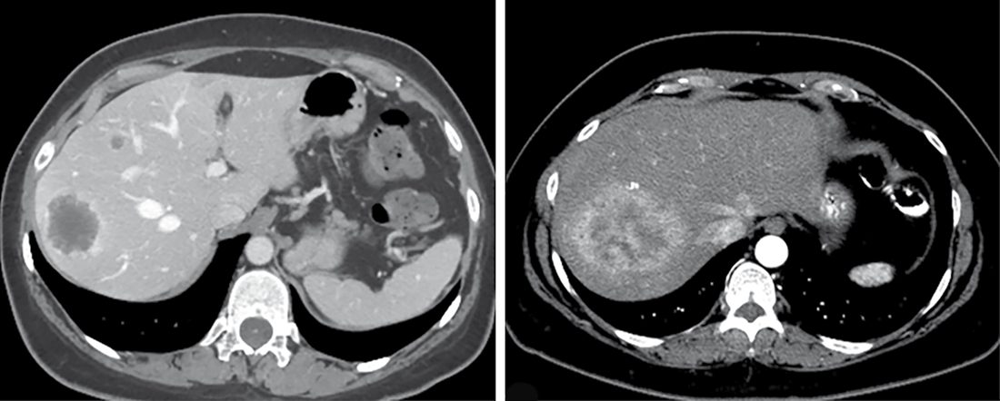
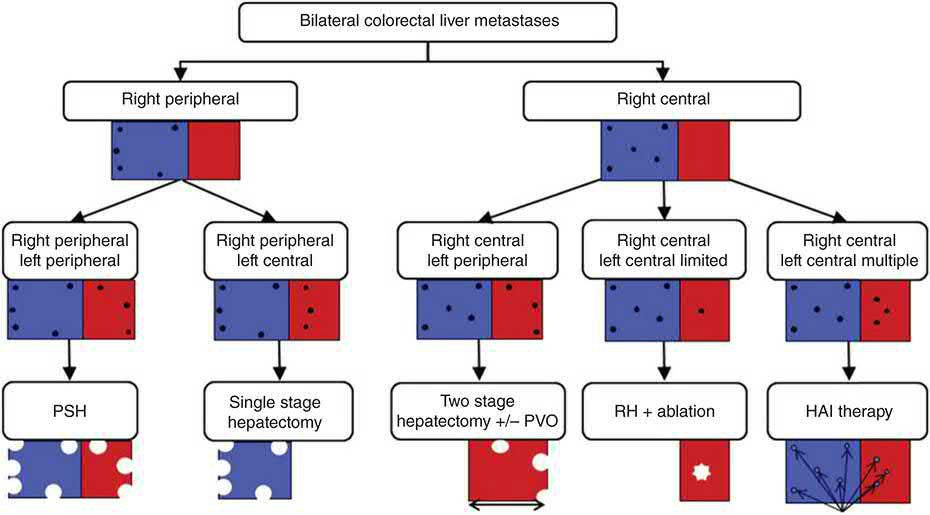
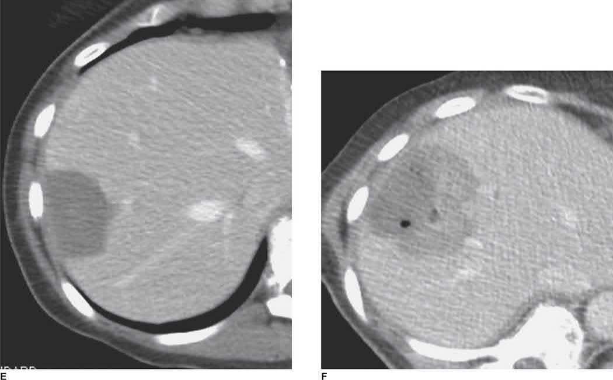
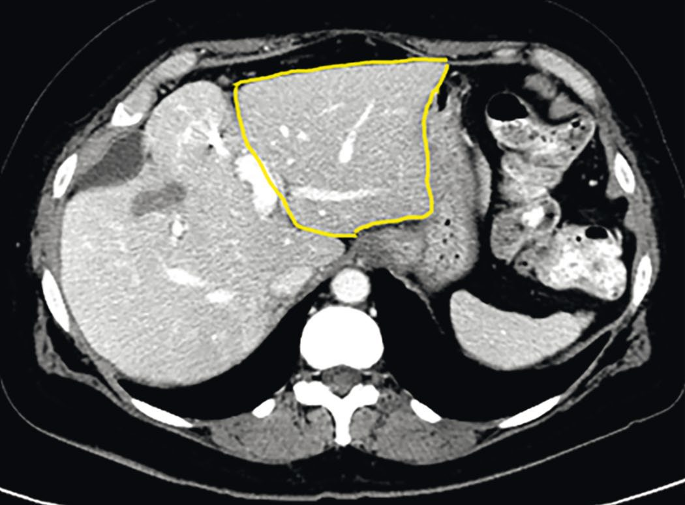

Metastatic Disease Management
Summary
- Metastatic (stage IV) disease was historically managed nonoperatively, but well-selected patients with oligometastatic disease confined to the liver, lung, peritoneum, or other single sites can achieve long-term survival, and even cure, with aggressive locoregional therapy combined with systemic treatment [1][2].
- Patient selection is the key determinant of outcome, based on tumour biology, disease-free interval, number and location of metastases, and response to systemic therapy [3][4].
- The liver is the most common site of metastasis for gastrointestinal malignancies and colorectal cancer is the leading cause of liver metastases; cytoreductive surgery with hyperthermic intraperitoneal chemotherapy (HIPEC) treats peritoneal surface disease, and pulmonary metastasectomy is used for lung-limited disease from multiple primaries [1][5][6].
There is no single NICE guideline on metastatic disease, but two documents cover the situations in which a general surgeon meets it, and both are structured around a named team rather than a procedure.
NG234, Spinal metastases and metastatic spinal cord compression, published in 2023 to replace CG75, covers recognition, immobilisation, imaging, mobilisation, pain, corticosteroids, stability and prognostic scoring, radiotherapy and invasive intervention [7]. Its organising post is the MSCC coordinator, a role with no counterpart in the textbook accounts, through whom every referral and initial care discussion passes [7].
CG104, Metastatic malignant disease of unknown primary origin, supplies a three-stage vocabulary that UK practice uses and the textbooks do not [8]:
| Term | Meaning |
|---|---|
| MUO, malignancy of undefined primary origin | Metastatic malignancy identified on the basis of a limited set of tests, before the initial diagnostic phase is complete |
| Provisional CUP | Metastatic epithelial or neuroendocrine malignancy with no identifiable primary site after the initial diagnostic phase |
| Confirmed CUP | No primary site identified after the second phase of special investigations is complete |
- Table reformats the CG104 diagnostic categories [8].
- Every hospital with a cancer centre or unit must establish a CUP team consisting as a minimum of an oncologist, a palliative care physician and a CUP specialist nurse or key worker, with a named lead clinician [8]. Outpatients with MUO are referred to the CUP team immediately using the rapid referral pathway for cancer so that all patients are assessed within 2 weeks, and inpatients with MUO are assessed by a member of the CUP team by the end of the next working day after referral [8].
- Patients must be upgraded to the existing cancer waiting times pathway when MUO is suspected or first diagnosed [8].
Definition
- Metastatic disease is the spread of malignant cells from a primary tumour to distant, noncontiguous anatomic sites via haematogenous, lymphatic, or transcoelomic (peritoneal) routes, forming secondary tumour deposits [1].
- Oligometastatic disease describes a state of limited metastatic burden (typically defined by number and location of lesions) that may still be amenable to curative-intent locoregional therapy, distinct from widely disseminated disease [1][4].
- Metastasectomy is the surgical resection of metastatic deposits with curative or disease-control intent, as distinct from resection of the primary tumour [6].
Pathophysiology
- Metastasis is a multistep process of invasion, intravasation, circulation, arrest/extravasation, and colonisation of a distant organ; only a small subset of disseminated tumour cells successfully forms micrometastases, and an even smaller proportion progress to clinically evident macrometastases [1][3].
- The liver is the organ most frequently affected by metastases because of its rich dual blood supply (particularly direct portal venous drainage from the gastrointestinal tract), fenestrated sinusoidal endothelium that is highly permeable to extravasating tumour cells, and an immunotolerant microenvironment; liver metastases develop in up to 50% of all cancer patients over the course of disease [1].
- Paget's "seed and soil" hypothesis (1889) holds that circulating tumour cells ("seed") will only form metastases in organs with a tumour-permissive microenvironment ("soil"); primary tumours can also release circulating factors that create a favourable "premetastatic niche" in secondary organs [1][2].
- Colorectal cancer is the leading cause of liver metastases, followed by lung, pancreatic, and breast cancer; hypovascular liver metastases (dark relative to background liver on portal venous phase imaging) typically arise from colon, lung, breast, and gastric cancer, while hypervascular metastases (bright on arterial phase) arise from neuroendocrine tumours, renal cell carcinoma, and melanoma [1].
- Peritoneal surface malignancy most commonly arises from gastrointestinal and gynaecological cancers, with peritoneal fluid circulating in a clockwise pattern that creates characteristic sites of tumour deposition and stasis: the pouch of Douglas, right paracolic gutter, right subhepatic space, and hepatorenal fossa (pouch of Morrison) [5].
- Bone metastases spread haematogenously to the spine (the third most common metastatic site after lung and liver) via the valveless Batson venous plexus, which permits retrograde embolic spread to the spine and proximal long bones [9].
Clinical features
- Symptoms from liver metastases typically arise from the primary tumour (e.g., bleeding or obstruction from colorectal cancer) rather than the metastases themselves, unless tumour burden is extensive or there is underlying liver disease; extensive hepatic metastases can cause abdominal pain, weight loss, malaise, and jaundice if the biliary tree is obstructed, while neuroendocrine liver metastases are an exception, causing carcinoid syndrome or other hormone-excess symptoms [1].
- Recognised metastatic spread patterns include Virchow's node (left supraclavicular, from intra-abdominal/pelvic (classically gastric) primaries), Sister Mary Joseph's node (periumbilical, from pancreatic cancer), Krukenberg tumour (ovarian metastasis from gastric cancer), and small bowel metastasis (most commonly from melanoma) [10][11].
- Bone metastases most commonly arise from breast (most common), lung, thyroid, prostate, renal, or colon carcinoma (93% of cases combined), with the spine, proximal femur/pelvis, and proximal humerus the most common sites, and risk of pathological fracture a key clinical concern [9].
- Malignant pleural effusion presents with breathlessness and is a common complication of lung cancer (usually indicating disease beyond surgical cure), pleural malignancy (mesothelioma, or diffuse pleural seeding from adenocarcinoma of any origin), or mediastinal lymphatic obstruction (classically in breast cancer, without evident pleural disease) [12].
- Retroperitoneal peritoneal surface disease can present insidiously or abruptly, and diagnosis before tumour burden becomes overwhelming is often difficult because small-volume peritoneal implants are hard to identify even with modern imaging [5].
Metastatic bone disease at the bedside
- Oxford's presentation checklist for metastatic bone disease is bone pain worse at night and with weight-bearing, systemic symptoms of fatigue, weight loss and loss of appetite, a personal or family history of cancer, and pathological fracture, which is common [13].
- Its investigative set is blood tests including calcium, phosphate and tumour markers (PSA, CEA, CA125), with bone scan and staging CT or MRI as required [13].
- Browse's adds the two features that make bone metastases easy to miss: some patients develop bony secondary deposits with no signs or symptoms to indicate the site of the primary tumour, and deep-seated bony metastases rarely produce any physical signs except pain on movement and tenderness on percussion [14].
- Acute pain occurs if there is a pathological fracture such as vertebral body collapse or femoral fracture, and noticeable swelling at the site of a metastasis is very unusual unless it is in a superficial bone such as the skull vault, clavicle or a rib [14].
- When superficial, a deposit may cause a bone swelling that appears rapidly and grows steadily, and its consistency may vary from hard and bone-like to soft and compressible [14].
MSCC is the one metastatic presentation NICE labels an oncological emergency, and the trigger for that label is a symptom list rather than an imaging finding. Think about the possibility of spinal metastases or MSCC in anyone with a past, current or suspected diagnosis of cancer together with any of the following [7]:
| Category | Features |
|---|---|
| Pain suggesting spinal metastases | Severe unremitting back pain; progressive back pain; mechanical pain aggravated by standing, sitting or moving; pain aggravated by straining such as coughing, sneezing or bowel movements; night-time back pain disturbing sleep; localised tenderness; claudication |
| Symptoms and signs suggesting cord compression | Bladder or bowel dysfunction; gait disturbance or difficulty walking; limb weakness; neurological signs of spinal cord or cauda equina compression; numbness, paraesthesia or sensory loss; radicular pain |
- Table reformats the NG234 recognition criteria [7].
- The two response times differ by category and this is the examinable distinction: immediately contact the MSCC coordinator, and treat as an oncological emergency, if a person with a past or current cancer diagnosis presents with the symptoms or signs of cord compression; but seek advice through the MSCC coordinator within 24 hours if they present with the pain characteristics alone [7].
- A person without a cancer diagnosis who has those pain characteristics, where cancer is suspected, is referred for urgent oncology assessment [7].
The imaging rules are equally time-bound, and one modality is prohibited outright [7]:
| Situation | Imaging |
|---|---|
| Suspected MSCC | MRI as soon as possible and always within 24 hours, at the local hospital; transfer to a tertiary centre only if local MRI is not possible |
| Clinical suspicion of spinal metastases without suspicion of MSCC | MRI within 1 week, at the local hospital |
| MRI contraindicated | CT; rarely, myelography after CT, and only at a neuroscience or spinal surgical centre |
| Existing diagnosis of spinal metastases without symptoms or signs of cord compression | Do not do MRI solely for early radiological detection of cord compression |
| Any | Do not do a plain X-ray of the spine to diagnose or rule out spinal metastases or MSCC |
- Table reformats the NG234 imaging pathway [7].
- The MRI protocol is specified: sagittal T1 and/or STIR sequences of the whole spine to identify metastases, sagittal T2 to show the level and degree of cord or cauda equina compression, and supplementary axial imaging through any significant abnormality [7].
- Overnight MRI is offered only where urgent diagnosis is needed to start treatment immediately [7].
Etiology
- Colorectal cancer is the leading cause of liver metastases, and liver disease directly contributes to mortality in over half of patients with colorectal liver metastases; one in four colorectal cancer patients present with synchronous liver metastases, and another quarter develop metachronous disease [1].
- RAS gene mutations (KRAS, NRAS, HRAS), found in 40–50% of patients undergoing colorectal liver metastasis resection, cause constitutive MAPK pathway activation, confer resistance to EGFR-inhibitor therapy (cetuximab, panitumumab), and independently predict worse survival after resection; BRAF V600E mutations (8–12% of metastatic colorectal cancer) are associated with a median overall survival of only 11 months and are less often liver-limited [1].
- Microsatellite instability-high (MSI-H) colorectal cancers (15% of all colorectal cancers) are less likely to present with liver metastases but, when they do occur, may carry a worse prognosis [1].
Diagnosis
- Tumour markers used to evaluate hepatic metastases include CEA (colorectal cancer), chromogranin A (neuroendocrine tumours), CA 19-9 (pancreatobiliary tumours), CA 15-3 (breast cancer), and CA 125 (ovarian cancer), interpreted with clinical correlation given false-positive/negative potential [1].
- Multidetector contrast-enhanced CT with arterial and portal venous phases (5 mm slice thickness or less) is the preferred first-line imaging for liver metastases; MRI with hepatocyte-specific contrast (gadoxetic acid) is preferred when hepatic steatosis, renal impairment, or contrast allergy limits CT, since metastases lack functioning hepatocytes and appear hypoattenuating on delayed hepatobiliary-phase MRI [1].
- FDG-PET is not routinely required for liver metastases but can characterise indeterminate lesions; DOTATATE-PET is specific for neuroendocrine tumours via somatostatin receptor binding [1].
- Percutaneous biopsy of a liver lesion is not mandatory when the primary is known and imaging is consistent with metastasis, but tissue diagnosis can inform tumour biology and systemic therapy selection; genotyping is over 90% concordant between the primary tumour and colorectal liver metastasis for RAS, BRAF, and TP53 [1].
- Diagnostic laparoscopy has a limited but selective role in colorectal liver metastasis staging today (given improved cross-sectional imaging), reserved for patients at high risk of occult peritoneal dissemination or with extensive prior chemotherapy where liver injury may exceed what is seen on imaging [1].
- For peritoneal surface malignancy, pathologic confirmation of peritoneal dissemination, CT/MRI assessment of disease extent and extra-abdominal spread, and tumour markers (CEA, CA 19-9, CA 125 for GI/gynaecological disease) are required before surgery is considered [5].

CG104 restricts the tumour-marker panel sharply, and the restriction is the point. For a patient with malignancy of undefined primary origin, the initial diagnostic phase is a comprehensive history and physical examination including breast, nodal areas, skin, genital, rectal and pelvic examination; full blood count, urea, electrolytes and creatinine, liver function tests, calcium, urinalysis and lactate dehydrogenase; chest X-ray; a myeloma screen where there are isolated or multiple lytic bone lesions; symptom-directed endoscopy; CT of chest, abdomen and pelvis; testicular ultrasound in men with presentations compatible with germ-cell tumours; and biopsy with standard histology and immunohistochemistry where necessary to distinguish carcinoma from other malignant diagnoses [8].
Against that, the second-phase instruction is a prohibition: do not measure tumour markers during diagnosis except for AFP and hCG in presentations compatible with germ-cell tumours, particularly mediastinal or retroperitoneal masses and young men; AFP in presentations compatible with hepatocellular cancer; PSA in men with presentations compatible with prostate cancer; and CA125 in women with presentations compatible with ovarian cancer, carefully interpreted because of limited test specificity [8]. Three further negatives follow: do not carry out upper or lower gastrointestinal endoscopy unless symptoms, histology or radiology suggest a GI primary; do not offer mammography routinely unless clinical or pathological features are compatible with breast cancer; and refer patients with adenocarcinoma involving the axillary nodes to a breast cancer MDT, considering dynamic contrast-enhanced breast MRI to identify lesions suitable for targeted biopsy only if no primary is found after standard breast investigations [8].
The aim of the initial phase is explicitly triage into three outcomes rather than a search for the primary at all costs: identify a primary site that will guide treatment; identify a non-epithelial malignancy that can be treated regardless of primary site, lymphoma, other haematological malignancies, melanoma, sarcoma and germ-cell tumours; or establish metastatic epithelial or neuroendocrine malignancy without an identifiable primary site, which is provisional CUP [8].
Scoring and Severity
- The Fong Clinical Risk Score (1999), derived from 1001 patients undergoing colorectal liver metastasis resection, identifies seven independent predictors of shorter survival: positive hepatectomy margin, node-positive primary tumour, disease-free interval under 12 months, more than one hepatic metastasis, metastasis size over 5 cm, CEA over 200 ng/mL, and extrahepatic disease [1].
- The Peritoneal Carcinomatosis Index (PCI) quantifies peritoneal tumour burden intraoperatively by scoring lesion size (0–3) across 13 anatomic regions of the abdomen and small bowel; completeness of cytoreduction (CC) is scored 0–3, with CC 0–1 (residual tumour under 2.5 mm) representing complete cytoreduction and CC 2–3 representing incomplete cytoreduction [5].
- Resection status after cytoreductive surgery is classified as R0 (complete removal, negative cytology/margins), R1 (complete gross removal with positive postperfusion cytology or microscopic margins), R2a (residual nodules ≤0.5 cm), R2b (nodules 0.5–2 cm), and R2c (nodules over 2 cm) [5].
- For liver resection, technical resectability requires that all intrahepatic disease can be removed while preserving adequate biliary drainage, vascular inflow/outflow, and at least two contiguous hepatic segments with adequate remnant volume; standardized future liver remnant (sFLR) thresholds to avoid postoperative liver failure are under 20% (normal liver), 30% (chemotherapy-injured liver), and 40% (cirrhosis) as the respective minimums required [1].
- The Mirels scoring system predicts pathological fracture risk from bone metastases using site, pain, lesion size, and lesion type (each scored 1–3); a score above 8 indicates high fracture risk warranting prophylactic fixation [9].
Treatment and Management
- Treatment intent for metastatic disease depends on number and site of metastases, cancer type, growth rate, prior treatment and response, and patient age, fitness, and preference; patient selection is the key determinant of successful surgical therapy for distant metastases [3][10].
- In curative-intent surgery for distant metastases, as for primary tumours, the goal is resection with negative margins regardless of open versus minimally invasive approach; factors enhancing surgical resection of metastatic disease include pre-resection tumour shrinkage with chemotherapy, a long disease-free interval between primary treatment and metastasis development, and favourable tumour type [3].
- Ovarian cancer is one of the few tumours for which surgical debulking improves the efficacy of subsequent chemotherapy [10].
- Adjuvant chemotherapy after resection of colorectal liver metastases (e.g., FOLFOX) has shown improved disease-free survival in randomized trials, with a less consistent overall survival benefit [1], on the evidence of the Nordlinger/EORTC and Kanemitsu trials.
- For unresectable colorectal liver metastases, liver-directed therapies include ablation (radiofrequency for tumours under 3 cm; microwave ablation is less susceptible to the heat-sink effect near vessels) and hepatic artery infusion chemotherapy using fluorodeoxyuridine, which exploits the fact that liver metastases are perfused predominantly by the hepatic artery while normal hepatic parenchyma is mainly portally perfused [1].
- Cytoreductive surgery with HIPEC uses intraperitoneal chemotherapy (mitomycin C for gastrointestinal primaries; cisplatin or carboplatin for ovarian cancer and peritoneal mesothelioma; oxaliplatin for repeat perfusion in appendiceal/colorectal disease) delivered at a target outflow temperature of about 40°C for roughly 120 minutes, exploiting higher local tissue concentration and lower systemic toxicity compared with systemic chemotherapy [5].
- For pulmonary metastases, general criteria for considering pulmonary metastasectomy are the ability to completely resect all pulmonary disease, controllability of the primary tumour, absence of extrapulmonary metastatic disease, and adequate cardiopulmonary reserve; if these criteria cannot be met, radiotherapy may be used for local control, particularly for bony or symptomatic metastases [6].
- Systemic therapy for metastatic disease is selected based on tumour biology and molecular profiling; failure to respond to systemic (immuno)therapy is generally a poor prognostic sign, whereas "oligoprogression" (a single progressing site amid otherwise controlled disease) may be managed with local therapy to the progressing site while continuing systemic treatment [4].
- Malignant pleural effusion is palliated by drainage and pleurodesis; malignant ascites may be drained externally or managed with a peritoneovenous shunt in selected cases [12][15].


Surgeries
- Colorectal liver metastasis resection is the cornerstone of curative-intent treatment; parenchymal-sparing (nonanatomic) resection is favoured over major hepatectomy when feasible, since wide margins are not typically necessary for metastases and a systematic review of over 2500 patients found similar R0 rates and overall survival between parenchymal-sparing and anatomic resection [1].
- Intraoperative ultrasound is used to define intrahepatic anatomy, detect metastases missed on preoperative imaging, and guide the resection margin during parenchymal transection [1].
- For insufficient future liver remnant, portal vein embolization induces compensatory hypertrophy of the nonembolized liver (a kinetic growth rate of at least 2% per week predicts 0% postoperative hepatic insufficiency); liver venous deprivation (combined portal and hepatic vein embolization) achieves superior hypertrophy compared to portal vein embolization alone in patients requiring extended resection; two-stage hepatectomy or the ALPPS procedure (associating liver partition and portal vein ligation for staged hepatectomy) are used for bilateral disease, though ALPPS carries higher morbidity/mortality and unclear survival benefit over conventional staging [1].
- For synchronous primary colorectal cancer and liver metastases, no approach (combined resection, primary-first, or liver-first staged resection) has shown superiority; combined resection reduces the number of operations but may increase complications, and is safest at high-volume centres, while a liver-first approach is favoured when hepatic disease burden dominates prognosis or for low rectal tumours where neoadjuvant chemoradiation may achieve a complete response [1].
- Neuroendocrine liver metastases are managed with surgical cytoreduction even when microscopically positive (R1) margins result, since R1 margin status is not associated with worse outcomes in this disease, unlike colorectal liver metastases [1].
- Cytoreductive surgery for peritoneal surface malignancy involves complete omentectomy, resection of the falciform/round ligament, peritonectomy of involved surfaces (including diaphragmatic stripping, typically requiring full right hepatic lobe mobilisation), and resection of the small/large bowel from the ligament of Treitz to the peritoneal reflection, while preserving at least 100 cm of small bowel beyond the ligament of Treitz to avoid permanent short bowel syndrome [5].
- Pulmonary metastasectomy is best suited to patients with three or fewer metastases; complete resection is consistently associated with improved survival over incomplete resection, and open thoracotomy (allowing bimanual palpation to find occult lesions) has traditionally been preferred over video-assisted thoracoscopic surgery (VATS), although VATS is an increasingly accepted alternative given improved preoperative imaging [6].
- Resection of oligometastatic melanoma (including brain metastases in carefully selected patients) can achieve 5-year survival of 15–40%, similar to the survival benefit seen after lymphadenectomy in advanced stage III disease [4].
- Palliative surgery for metastatic disease targets a symptomatic primary tumour (e.g., obstructing or bleeding colon cancer, or breast cancer with skin/chest wall involvement) to improve quality of life without necessarily altering ultimate outcome [2][10].
- For metastatic bone disease, surgical treatment is usually palliative; complete resection of solitary metastases (particularly from breast or renal primaries, which may have prolonged disease-free survival) may be considered with excision and prosthetic reconstruction, spinal surgery is used for cord decompression/stabilisation, and long bones at risk of pathological fracture (Mirels score above 8) require prophylactic fixation; preoperative embolisation should be considered for renal metastases given marked vascularity and bleeding risk [9].

- Dexamethasone in MSCC has a single specified dose, and NICE also says when not to give it.
- For people with neurological symptoms or signs of MSCC, offer 16 mg of oral dexamethasone, or an equivalent parenteral dose, as soon as possible, and continue 16 mg daily for people awaiting surgery or radiotherapy, reducing gradually after surgery or at the start of radiotherapy until stopped [7]. If dexamethasone is given before imaging and spinal metastases and MSCC are subsequently ruled out, discontinue it [7].
- Conversely, do not routinely offer corticosteroids as part of initial management to people with spinal metastases or MSCC who do not have neurological symptoms or signs, except as part of a radiotherapy regimen, the exceptions being severe pain or a haematological malignancy [7].
- Two haematological cautions apply: people with confirmed haematological malignancy and spinal metastases are offered 16 mg dexamethasone with further treatment discussed with the haematology MDT, and specialist haematological advice must be sought before starting corticosteroids in radiologically suspected lymphoma or myeloma with spinal metastases and no neurological signs [7].
- Anyone on corticosteroid treatment must have blood glucose monitored and be offered proton pump inhibitor acid suppression [7].
- Immobilisation is selective, not automatic.
- Start immobilisation without delay, including for transfer to hospital, only for people with suspected or confirmed MSCC and neurological symptoms or signs suggesting spinal instability; merely consider it where there is suspected or confirmed disease with moderate to severe pain associated with movement [7].
- Immobilised patients are nursed supine to minimise weight bearing by the spine, and early advice must be sought within 24 hours from a specialist physiotherapist, oncologist or spinal surgeon to minimise the duration of immobilisation [7].
- Where assessment suggests stability is likely, testing begins by graded sitting followed by weight bearing, with continuous monitoring of neurological symptoms and pain [7].
- Two named scoring systems are endorsed, with a caveat attached to both.
- Consider a validated spinal stability scoring system with good evidence of accuracy (for example the Spinal Instability Neoplastic Score) alongside clinical assessment, and a validated prognostic scoring system (for example the revised Tokuhashi score) alongside recognised prognostic factors such as comorbidities [7].
- But only use a scoring system as part of a full clinical assessment, including general health, pain and imaging, to support decision-making and inform discussion with the patient and their family [7].
- Radiotherapy dose is specified and defaults to a single fraction.
- For spinal metastases without MSCC causing non-mechanical spinal pain, offer 8 Gy single fraction radiotherapy, even if the patient is paralysed, or consider stereotactic ablative body radiotherapy for those with a good overall prognosis or oligometastases, defined as up to 3 discrete metastases anywhere in the body, with spinal involvement [7].
- For MSCC not suitable for spinal surgery, offer urgent radiotherapy as soon as possible and within 24 hours, unless the person has had complete tetraplegia or paraplegia for 2 weeks or longer with well-controlled pain, or their overall prognosis is poor [7]. Use 8 Gy single fraction unless the patient is at high risk of side effects, in which case consider multiple fractions, for example where a large treatment field is needed or there has been previous radiotherapy [7].
- Radiotherapy for haematological malignancy with spinal metastases may reduce the success of stem cell harvest, so its use must be discussed with the haematology MDT if harvest is being considered [7].
The surgical options split by whether cord compression is present [7]:
| Situation | Options |
|---|---|
| Spinal metastases without MSCC, with suspected or confirmed instability or pain not controlled by analgesia | Vertebroplasty or kyphoplasty; radiofrequency ablation; surgical stabilisation of the spine; spinal surgery to prevent MSCC, alone or in combination |
| Spinal metastases with MSCC | Surgical decompression of the spinal cord; surgical stabilisation of the spine |
- Table reformats the NG234 invasive intervention options [7].
- Two further recommendations govern the decision. Offer spinal stabilisation surgery even if there is a severe neurological deficit that may be irreversible, provided the person has suspected or confirmed instability with mechanical pain not controlled by analgesia and surgery is suitable for them; where surgery is not suitable, offer external spinal support such as a halo vest or cervico-thoraco-lumbar orthosis instead [7].
- And on timing, take into account the speed of onset and rate of progression of neurological symptoms and signs when determining urgency, but do not use a time limit after complete tetraplegia or paraplegia as the only factor to decide whether to offer surgical intervention to restore neurological function [7].
Complications
- Post-hepatectomy liver failure occurs in 3–8% of patients after major hepatectomy and is a key reason for careful future liver remnant assessment before resection [1].
- Combined major hepatectomy with high-risk colectomy carries substantial morbidity and mortality (reported as high as 55% major morbidity and 5% mortality in a national database series, though considerably lower (23% grade 3–4 morbidity, 0% mortality) at a high-volume centre) [1].
- Radiofrequency ablation of liver metastases carries risk of bile duct injury, haemorrhage, and liver infarction, with subcapsular lesions at particular risk of capsular rupture and bleeding [1].
- Massive endoprosthetic reconstruction after resection of bone metastases carries risks of infection, instability, and prosthesis wear or loosening [9].
- Splenic and renal metastasis surgery carries a risk of massive intraoperative blood loss given marked tumour vascularity [9].
Prognosis
- Colon cancer liver metastases achieve roughly 35% five-year survival with successful resection, with favourable prognostic factors including disease-free interval over 12 months, fewer than three tumours, CEA under 200, size under 5 cm, and negative nodes [10].
- Five- and ten-year survival after complete pulmonary metastasectomy are 36% and 26% respectively, with better prognosis for germ cell tumours, disease-free interval of 36 months or more, and single metastases [6].
- Germ-cell tumours (especially seminoma) are the most successfully cured metastatic disease with surgery, with reported five-year survival around 75% [10].
- Overall five-year survival after complete cytoreduction with HIPEC for retroperitoneal/peritoneal sarcoma-type disease is heavily influenced by resection completeness and grade [18].
- Extrahepatic disease at the time of colorectal liver metastasis resection is associated with higher recurrence and worse prognosis but is not an absolute contraindication to resection in carefully selected patients with complete resection of all disease sites, patients with extrahepatic disease isolated to the lung have the longest reported median survival (78 months) among such patients [1].
- RAS-mutant colorectal liver metastases carry significantly worse 3-year overall survival than RAS wild-type disease (52% vs 81%), and BRAF V600E-mutant disease carries a median survival of only 40 months versus 81 months for BRAF wild-type after resection [1].
References
- Sabiston Textbook of Surgery, 22nd ed., Ch. 90 Secondary Tumors of the Liver
- Bailey & Love's Short Practice of Surgery, 28th ed., Ch. 12 Principles of oncology
- Schwartz's Principles of Surgery: ABSITE and Board Review, Ch. 10 Oncology
- Sabiston Textbook of Surgery, 22nd ed., Ch. 63
- Sabiston Textbook of Surgery, 22nd ed., Ch. 70
- Sabiston Textbook of Surgery, 22nd ed., Ch. 110
- NICE Guideline NG234: Spinal metastases and metastatic spinal cord compression (2023; replaces CG75), 1.3.1, Box 1; 1.3.2; 1.3.3; 1.3.4; 1.3.5; 1.4.1; 1.4.2; 1.4.3; 1.4.4; 1.5.2; 1.5.3; 1.5.4; 1.5.5; 1.5.6; 1.5.7; 1.5.8; 1.5.9; 1.6.1; 1.6.2; 1.8.1; 1.8.2; 1.8.3; 1.8.5; 1.8.6; 1.8.7; 1.8.8; 1.9.1; 1.9.2; 1.9.3; 1.10.2; 1.10.3; 1.10.4; 1.10.5; 1.10.6; 1.11.4; 1.11.5; 1.11.6; 1.11.7; 1.11.8; 1.11.9; Recommendations www.nice.org.uk
- NICE Clinical Guideline CG104: Metastatic malignant disease of unknown primary origin in adults — diagnosis and management (2010, last updated 2023), 1.1.1.1; 1.1.1.4; 1.1.1.8; 1.2; 1.2.1.1; 1.2.2.1; 1.2.2.2; 1.2.2.3; 1.2.2.4 www.nice.org.uk
- Bailey & Love's Short Practice of Surgery, 28th ed., Ch. 42 Musculoskeletal tumours
- The ABSITE Review, 2022, Ch. 11
- The ABSITE Review, 2022, Ch. 6
- Bailey & Love's Short Practice of Surgery, 28th ed., Ch. 60 The thorax
- Oxford Handbook of Clinical Surgery, 5th ed., Ch. 16 Orthopaedic surgery
- Browse's Introduction to the Symptoms and Signs of Surgical Disease, 6th ed., Ch. 6 Bones, joints, muscles and tendons
- Bailey & Love's Short Practice of Surgery, 28th ed., Ch. 68
- Maingot's Abdominal Operations, 13th ed., Ch. 60
- Maingot's Abdominal Operations, 13th ed., Ch. 59
- Maingot's Abdominal Operations, 13th ed., Ch. 18